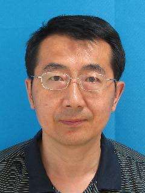
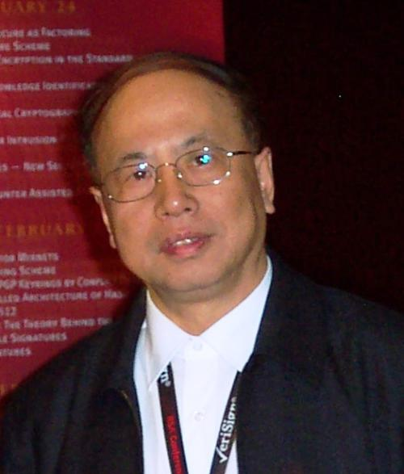
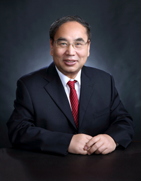
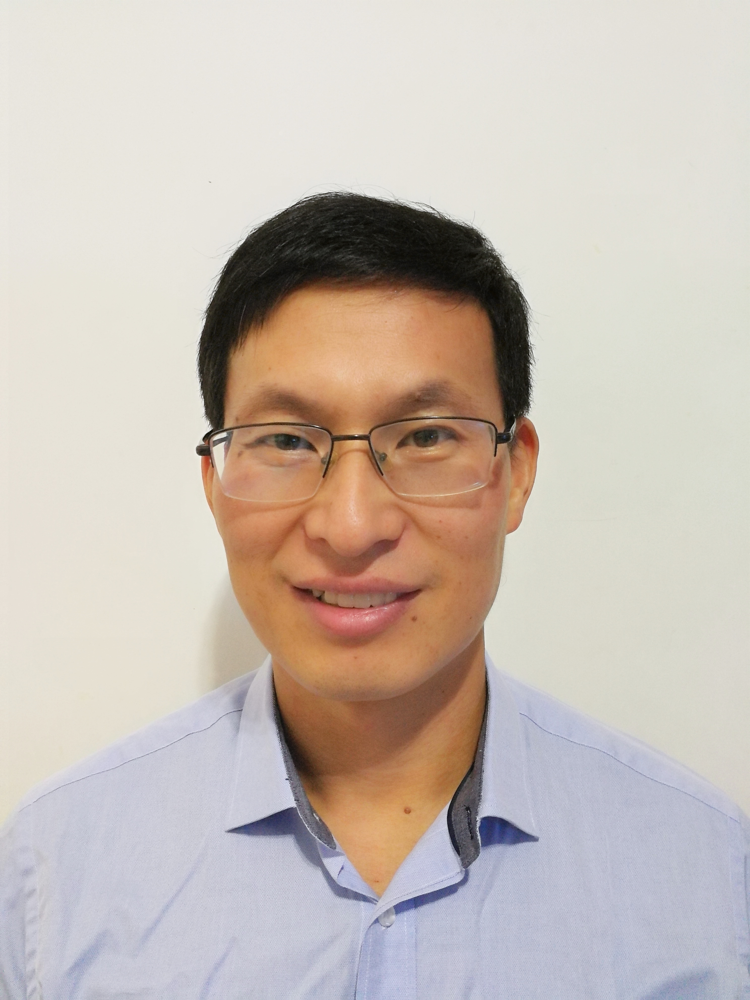

大会嘉宾
-

孙大跃
陕西省信息网络安全协会会长
现任长安大学教育技术与网络中心主任，信息工程学院教授，硕士生导师，享受国务院政府特殊津贴专家，陕西省信息网络安全协会理事长。陕西省政府信息技术专家组成员；陕西交通厅综合监控系统建设顾问、专家组成员
-

赵战生
中国密码学会理事计算机安全专业委员会委员
1964年-1978年在中国科学技术大学无线电电子学系工作，1978年调到中国科学技术大学研究生院（现中国科学院大学），先后在无线电教研室、数据与通信保护研究教育（DCS）中心、信息安全国家重点实验室工作。1981年起，参加曾肯成教授领导的电子密钥研制小组的密码研究工作，从事信息安全研究工作。
-

李新友
国家信息中心首席工程师
第六届中国青年科技奖获得者。现任国家信息中心首席工程师，二级研究员，中国计算机学会信息保密专委会常委。主要研究领域包括：信息安全、电子政务、计算机应用。
-

李璐瑶
交通部信息安全中心处长
交通运输信息安全中心有限公司总经理，智能交通博士，研究员，等级保护高级测评师。曾任黑龙江交通运输厅科技处处长、交通运输部科学研究院副总工程师。
-

翟起滨
北京大学软件与微电子学院教授
在密码理论和技术领域工作近四十年，在实际工作中多次立功受奖，获政府特殊津贴。承担国家密码与信息安全研究项目，担任国家密码专项课题研究主持人。
-

马建峰
西安电子科技大学计算机学院院长
计算机系统结构专业和密码学专业博士生导师，计算机网络与信息安全教育部/信息产业部重点实验室主任，计算机学院院长，陕西省优秀留学回国人员。
-

马民虎
西安交通大学信息安全法律研究中心主任
中国网络空间安全协会副理事长，中国网络空间安全协会网络空间安全法律与公共政策专业委员会主任，国家密码管理局密码法立法顾问，国家工业信息安全专家咨询委员会委员，中国计算机安全专委会常务委员，中国信息法学研究会理事，中国大数据专家委员会委员等
-

陈本峰
国家千人计划特聘专家云适配CEO
云适配创始人CEO，国际互联网标准联盟W3C中国区HTML5布道官，专注互联网标准制定以及浏览器内核技术研究超过10年。曾就职于微软美国总部IE浏览器核心研发团队，成功发布了IE8、IE9、IE10，参与了下一代互联网标准HTML5国际标准制定以及IE中HTML5引擎的设计。
-

冯伟
得安研究院副院长
冯伟在部队工作期间，长期从事信息安全保密的科研开发和总体论证工作，在科研开发阶段，积极学习各类新知识，对技术精益求精，擅长Linux操作系统、计算机网络、设备驱动程序、安全通信协议等